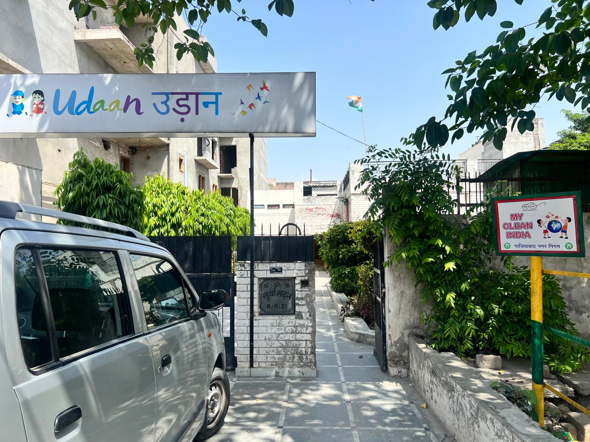

Udaan
Ghaziabad

About Udaan
Udaan — meaning "flight" in Hindi — is a small, grassroots NGO school built entirely on belief: the belief that every child, regardless of background or circumstance, deserves access to education and the chance to soar. Operating from a single classroom, Udaan serves around 60 children aged 7 to 13 years old, many of whom would otherwise have no access to formal schooling.
What Udaan lacks in scale, it more than makes up for in spirit. Run by dedicated volunteers and community members, this is education at its most human — where every child is seen, every question is welcomed, and every small step forward is celebrated. Battery Bin is deeply proud to call Udaan a partner.
🌱 Why It Stands Out
- Entirely grassroots — driven by community volunteers, not institution budgets
- Around 60 children aged 7–13, many with no other access to formal education
- Dedicated classrooms where every child receives personal attention and care
- Proof that the size of a space is no limit to the size of an impact
- Battery Bin's most intimate partner — and one of its most meaningful
♻️ Sustainability in Action
At Udaan, the Battery Bin isn't just a recycling point — it's a teaching moment. For children aged 7 and 8, placing a used battery in the bin is their first real lesson in civic responsibility: the idea that the small things we do every day can either harm or help the world around us.
Teachers at Udaan weave the Battery Bin into classroom conversations about nature, cleanliness, and caring for the environment — turning a simple act into a powerful, lifelong habit. When these children grow up, they will remember that they, too, had a role in protecting the planet.
🗣️ What the Children Say
💚 A Special Partnership
Battery Bin believes that environmental change doesn't start in boardrooms or laboratories — it starts in classrooms. And sometimes the most powerful classrooms are the smallest ones. Udaan represents everything Battery Bin stands for: community, responsibility, and the conviction that no act of care is ever too small.
📍 Battery Bin Location

Battery Bin placed inside Udaan's classroom
📸 Inside the Classroom
Conversations with the children about batteries, recycling, and why it matters.


👧 Who They Serve
Around 60 children aged 7–13 from underserved communities — learning to read, write, and now, to recycle.
🏫 The Space
Dedicated classrooms where big dreams take root every single day.
📅 Established: N/A
🏆 Battery Recycling Recognition
Recognised for bringing the spirit of environmental responsibility to children who need it — and who will carry it furthest.

♻️ Why This Matters
Impact is not measured in square footage or student numbers alone. Sixty children learning to recycle today will grow into sixty adults who recycle, teach their own children to recycle, and perhaps inspire their entire communities to do the same. Udaan may be small — but its ripple effect is immeasurable. This is why Battery Bin is proud to stand with every partner, large or small, who shares the belief that a cleaner world begins with us.